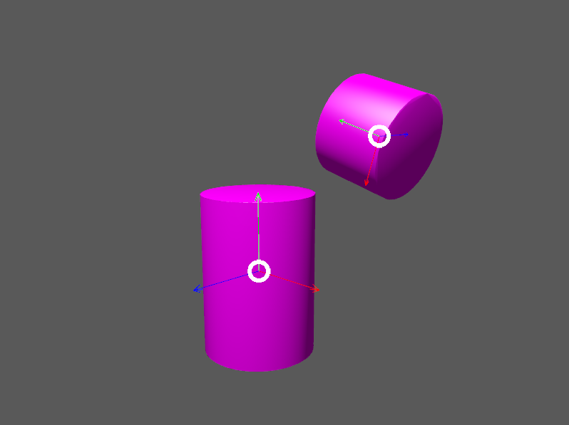
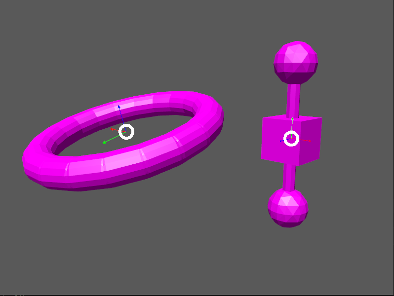
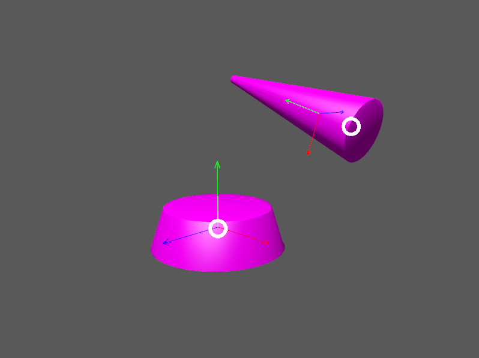

Choosing collision shapes
A collision shape describes the shape and size of a physics object such as a rigid body.
The 18 shape classes
The examples so far have all used spheres, cubes, and/or cylinders.
However, those are but 3 of the 18 concrete subclasses of
Shape.
The subclasses are summarized here, in lexicographic order, with illustrations and lists of key properties (explained below):
1. → convex with convex radius |
|
2. → convex without convex radius |
|
3. → convex with convex radius |
|
4. → convex with convex radius |
 |
5. → non-convex |
(no image) |
6. → used to simulate terrain efficiently |
|
7. → non-convex |
|
8. → compound (non-convex) |
 |
9. → decorated (non-convex) |
|
10. → non-convex |
|
11. → decorated (non-convex) |
|
12. → decorated (non-convex) |
(no image) |
13. → non-convex |
(no image) |
14. → convex without convex radius |
|
15. → compound (non-convex) |
|
16. → convex without convex radius |
|
17. → convex with convex radius |
 |
18. → convex with convex radius |
Creating shapes
While simple shapes like boxes and spheres can be instantiated directly,
some shapes can only be created using a settings object.
For instance, to instantiate a ConvexHullShape,
you must use a ConvexHullShapeSettings object:
ConvexHullShapeSettings settings = new ConvexHullShapeSettings(points);
ShapeResult result = settings.create();
assert result.isValid();
ShapeRefC ref = result.get();
ConvexHullShape shape = (ConvexHullShape) ref.getPtr();Decorated and compound
A decorated shape is derived from a pre-existing inner shape.
For instance, you can create spheres with off-center mass
by applying OffsetCenterOfMassShape to ordinary spheres.
A compound shape combines any number of pre-existing child shapes into a single shape:
-
A
MutableCompoundShapeallows child shapes to be added or removed from after the compound is created. -
A
StaticCompoundShapeprohibits such modifications.
Convex versus non-convex
The convex collision-shape classes are those that guarantee the convex property: for any 2 locations inside a shape, the line segment connecting those locations lies entirely inside the shape.
To test whether a shape belongs to a convex class:
boolean convexClass = (shape instanceof ConvexShape);
// or
boolean convexClass = (shape.getType() == EShapeType.Convex);| In Jolt JNI, "convex" is a property of classes, not objects. While specific instances of non-convex classes possess the convex property, those classes don’t guarantee it for all instances. |
Convex radius
Convex radius is a property found only in convex shapes with sharp edges and/or corners.
To speed up collision detection, Jolt Physics rounds off edges and corners. The geometrical shape is first shrunk by the convex radius, then inflated again by the same amount.
For boxes, cylinders, tapered cylinders, and triangles, convex radius limits the minimum size of shapes. For such shapes, the radius defaults to 5 centimeters. To create very small shapes of this sort, it may be necessary override the default value.
For convex hulls, the default convex radius depends on the vertices used to construct the shape.
Choosing a shape
For efficient simulation, the general rule is: "Use the simplest shape that yields the desired behavior." Focusing on behavior (rather than appearance) helps you avoid simulating details that don’t matter. For instance:
-
A character’s hair should probably be omitted from their collision shape.
-
Any small object that only encounters large, flat surfaces can probably be approximated by a convex hull.
-
As long as a container remains sealed, its collision shape need not be hollow.
Mesh shapes, which support the greatest detail, cannot be used in movable bodies. If you need to simulate a moving mesh, first try approximating the mesh with a convex shape. For meshes that cannot be approximated this way (due to bends, holes, indentations, or steep protrusions) the fallback is to decompose the mesh into a small number of convex shapes that, when compounded together, approximate the desired behavior.
Depending how much you know about a mesh, there are various approaches to decomposing it:
-
If the mesh is generated procedurally, it may be convenient to decompose it during the generation process.
-
If the mesh was crafted in a tool such as Blender, it may be practical to manually decompose it there, into sub-meshes that are convex or nearly so.
-
As a last resort, you can decompose any mesh into triangle shapes, though the resulting compound shape may be expensive to simulate.
Automated decomposition
For situations where other decomposition approaches are impractical, Jolt JNI incorporates Khaled Mamou’s Volumetric-Hierarchical Approximate Convex Decomposition (V-HACD) algorithm. V-HACD makes it easy to decompose a 3-D mesh of triangles into a compound of convex-hull shapes:
import com.github.stephengold.joltjni.vhacd.ConvexHull;
import com.github.stephengold.joltjni.vhacd.Decomposer;
import com.github.stephengold.joltjni.vhacd.Parameters;
// ...
float[] locationArray = /* vertex locations in the mesh ... */
int[] indexArray = /* vertex indices in the mesh ... */
Decomposer decomposer = new Decomposer();
Parameters tuningParameters = new Parameters();
Collection<ConvexHull> hulls
= decomposer.decompose(locationArray, indexArray, tuningParameters);
StaticCompoundShapeSettings compoundSettings
= new StaticCompoundShapeSettings();
compoundSettings.addHulls(hulls);Summary
-
Jolt JNI provides 18 types of collision shapes, ranging from the trivial
EmptyShapeto the detail-orientedMeshShape. -
Collision-shape instances classified as "non-convex" may still exhibit the convex property.
-
Most convex shapes incorporate a convex radius to round off the corners.
-
Use the simplest shape that yields the desired behavior.
-
For moving bodies, mesh shapes can be approximated by compounds of convex shapes, such as convex hulls.